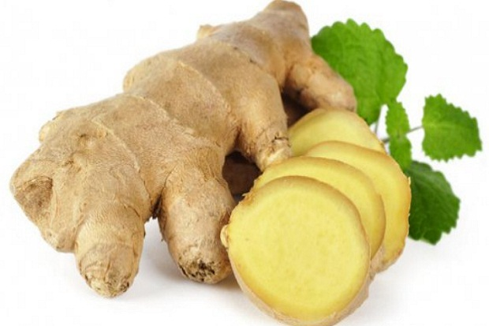

Empon-Empon
Shop
©
Home
About
Contact me
WELLCOME TO OUR SHOP
"Provides ALL Your Empon-empon Needs"
Our products are useful for maintaining your body's health
Various Types of Herbs are
Available in here

Fig.1 - Jahe
Fig.2 - Kencur
Fig.3 - Lengkuas
Fig.4 - Kunyit
Fig.5 - Jahe Merah
Fig.6 - Kayu Manis
Fig.7 - Temulawak
This Video is An example of used
Your browser does not support the video tag.